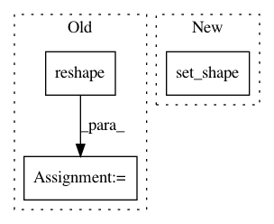

c1db25d9281a9374005d5c8b4e183b8e6d7d2ace,cloud_tpu/models/resnet/estimator_resnet.py,,input_fn,#Any#Any#,193
Before Change
labels_shape = labels.get_shape().as_list()
if labels_shape[0] is None:
labels_shape[0] = batch_size
labels = tf.reshape(
labels, labels_shape, name="InputPipeline/labels/reshape")
images = pipeline_outputs_transform(images)
return images, labels
After Change
dataset = dataset.batch(batch_size)
images, labels = dataset.make_one_shot_iterator().get_next()
// TODO(xiejw,saeta): Consider removing the sharding dimension below.
images.set_shape(images.get_shape().merge_with(
tf.TensorShape([batch_size, None, None, None])))
labels.set_shape(
labels.get_shape().merge_with(tf.TensorShape([batch_size, None])))
images = pipeline_outputs_transform(images)
return images, labels
In pattern: SUPERPATTERN
Frequency: 3
Non-data size: 3
Instances
Project Name: tensorflow/tpu
Commit Name: c1db25d9281a9374005d5c8b4e183b8e6d7d2ace
Time: 2017-09-06
Author: frankchn@google.com
File Name: cloud_tpu/models/resnet/estimator_resnet.py
Class Name:
Method Name: input_fn
Project Name: NifTK/NiftyNet
Commit Name: be296bdca43479c3e6155444a0c171bed4b3398c
Time: 2017-10-31
Author: wenqi.li@ucl.ac.uk
File Name: niftynet/contrib/sampler_pairwise/sampler_pairwise.py
Class Name: PairwiseSampler
Method Name: layer_op
Project Name: tensorflow/models
Commit Name: b3377b098a78e8a2508527f9d71a89b15fef3929
Time: 2020-04-20
Author: gardener@tensorflow.org
File Name: official/nlp/modeling/layers/on_device_embedding.py
Class Name: OnDeviceEmbedding
Method Name: call